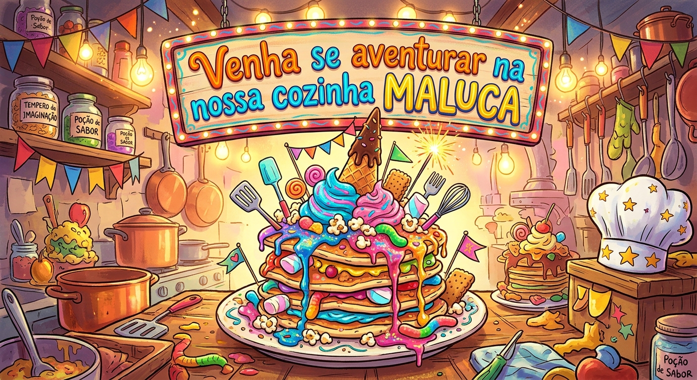

Meu primeiro post.
Sejam Bem-vindo a nossa cozinha maluca!
Por: Luiza Kehl.
Bem-vindo a nossa maravilhosa cozinha maluca, onde iremos criar comidas estranhas e fantásticas. Aqui suas ideias são aceitas do seu jeitinho.

Sejam Bem-vindo a nossa cozinha maluca!
Por: Luiza Kehl.